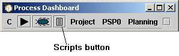
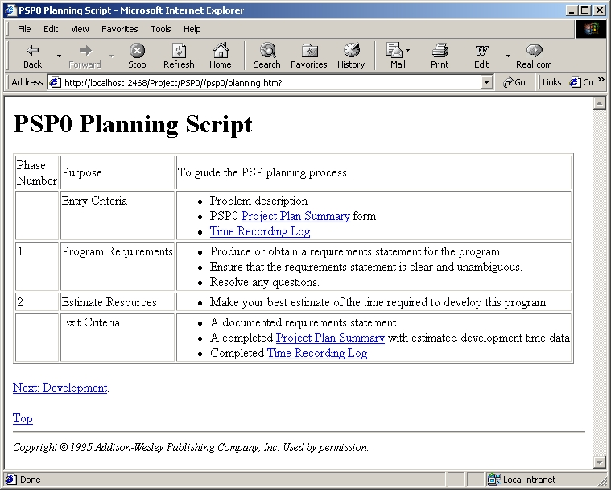

To access process scripts, hit the script button on the dashboard.

This will start (if necessary) a web browser and point it at an appropriate process script based on which process stage is currently active.

This example shows a project calling up the Planning script for PSP level 0.
The dashboard attempts to determine which script is likely to be most helpful given your current phase of activity. The current phase of activity is determined by the completion status of the phases of the current running process template (PSP0, PSP0.1, etc.). For info on marking phases as complete, see The completion button help topic. Most of the online forms allow you to navigate back to the "top" of the set of process scripts by a link labelled "Top". Also, a link which will take you on to the next phase in the given process is usually shown as well.